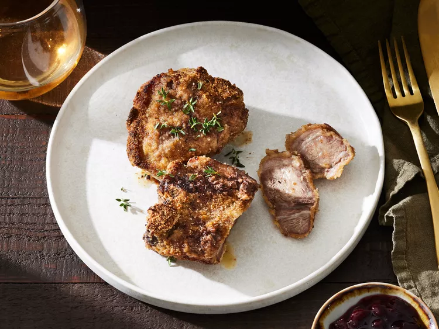

pečeni janjeći kotleti.

Sastojci
- 3 velika jaja
- 3 kašike Wochestershire umaka
- 2 šolje suhih krušnih mrvica
- 12 janjećih kotleta
Priprema
- Prikupite svoje sastojke i zagrijte pećnicu na 190 stupnjeva
- Stucite jaja i Wochestershire umak u posudi
- Postavite krušne mrvice u drugu posudu. Umočite svaki janjeći kotlet u mješavinu umaka i jaja te uvaljajte ih u krušne mrvice. Rasporedite ih u 9x13 inčnu šerpu.
- Pecite kotlete u pećnici 20 minuta, nakon čega okrenite kotlete na drugu stranu, te pecite još 20 minuta.
Povratak na početnu stranicu